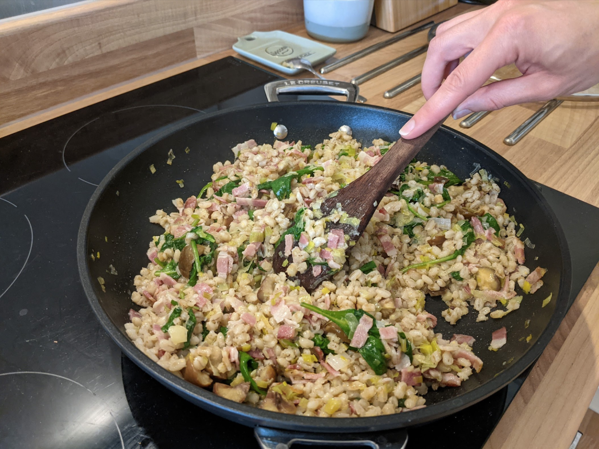

Ingredients
- 200g farro, quinoa or pearl barley
- 1L vegetable or chicken stock
- 150g pancetta
- 1 leek, cleaned and finely chopped
- Scant 1 Tbsp of salted butter)
- 4 Tbsp olive oil
- 1 sprig of rosemary (leaves only)
- 2 large handfuls of baby spinach or shredded kale
- 100g cooked chestnuts, broken up
- Cook grain of choice until tender, then drain.
- Warm the butter and oil in a pan over medium heat, then add the pancetta/bacon, leek and
rosemary and cook until soft.
- Add the cooked grain, spinach and chestnuts to the pan, stirring to combine.
- Cover and cook until the leaves have wilted and the chestnuts have warmed through. Serve warm or
cold.
Serves 4.
Inspired by this
recipe.